Introduction to the
Constellation Query Language
(Copyright 2008 Clifford Heath)
The Constellation Query Language (CQL) is a language for constructing and querying semantic information models. It is based on the graphical Object Role Modeling language, with some terminology adopted from the Semantics of Business Vocabulary and Business Rules.
Because CQL has an open vocabulary, and because it is designed to resemble natural language, the formal grammar has potential ambiguities. Most of these ambiguities can be automatically resolved, and the resolutions will become obvious as the syntax rules unfold. As described here, CQL uses English language keywords and expressions, though variants of CQL are being defined that substitute keywords and expressions from other languages. Some of these keywords are disallowed as open vocabulary, where they would create unresolvable ambiguities. This includes all the logical operators, such as and, or, maybe, not, none, no, only if, etc. Other keywords such as is, identified, kind, of, as, at, etc, are allowed to be used anywhere open vocabulary is allowed, and their special meaning applies only in the specific places noted.
CQL is case sensitive. "Person" is not the same
thing as "person". It's conventional, though not required, to
use a capital letter for all concept names.
White space and comments as used in C and C++ are allowed:
/* comment
may span lines */ and
// introduces a comment to end of the current line.
CQL Definitions
A semantic model (known in CQL as a vocabulary) comprises definitions of the following kinds:
- Concepts designated by name, including entity types and data types.
- Fact Types each designated by one or more readings. Fact types define the relationships between concepts. A fact type may be designated by a name, which allows its use as a concept in other fact types.
- Instances of concepts and fact types as examples or as reference data.
- Constraints which restrict the allowed concept instances and facts within a valid population.
- Units used to automate value conversion.
In ORM, concepts are called object types, divided into value types and entity types. Value types in ORM are slightly different from data types in CQL, but CQL uses the terms interchangably.
A CQL file must start with a vocabulary definition, and may import elements from one or more other vocabularies.
- statement:
-
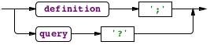
- definition:
- 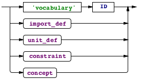
An import definition imports concept names from another vocabulary, possibly using the alias syntax to rename some terms:
- import_def:
- 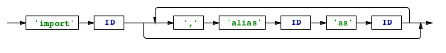
A concept represents a type of thing that can be perceived or conceived. Each concept has at least one name (or term), and the word concept as used throughout this document implies the use of one of these terms. A concept definition starts with its name, and is one of the following kinds. Names in CQL are case sensitive, and it’s conventional practice to use initial capital letters for concept names (this is required in Object Role Modeling but not in CQL). It is however a good way of allowing concept names to be to be distinguished from the same words in lower case, where they may occur in fact type readings.
- concept:
- 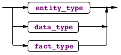
Data Types
A Data Type is a kind of thing which has a single value that may be written down, that is, a lexical type, like a number, a name, a date, etc.
A data type is usually derived from another data type, where top-level data types are defined in an imported vocabulary. A data type may refine its supertype by the use of length and scale parameters where relevant. (The ability to define custom parameters is anticipated in a revision of the language.) A value restriction might also limit the allowable values from those allowed by the supertype; these restrictions are discussed below.
- data type:

- data type details:
- 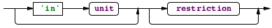
Top-level data types are defined by self-reference, e.g.
Integer is defined as Integer();
A unit definition defines a new unit identifier in terms of an optional coefficient (real number or integer fraction) multiplied by one or more base units, each raised to an integer power. It's common to define the singular form of a unit, then also define the plural as equivalent.
- unit_def:
-
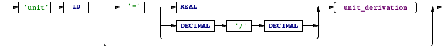
- unit_derivation:
-
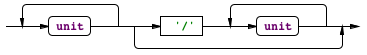
- unit:
- 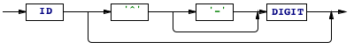
An extensive library of unit definitions is provided, and you can define your own.
Entity Types
Each Entity Type plays roles in at least one fact type, and is identified by the combination of one or more such roles. At least one identifying role must be mandatory.
- entity type:
- 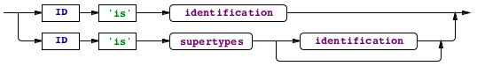
- supertypes:
- 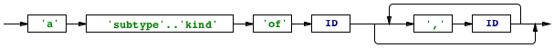
- identification:
- 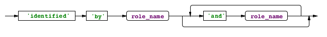
- id_fact_types:
- 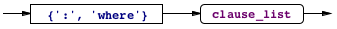
- role_ref:
- 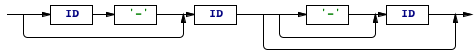
The simplest form of entity type identification scheme is by a single role value, for which the reference mode shorthand is provided, as in:
Thing is identified by its Value;
Value is assumed to be (or created as) a data type. A subtype of Value is assumed (or created) called ThingValue. Data type parameters may not yet be provided; this is an omission that will be corrected in an early revision. The Thing is then associated in an identifying one-to-one fact type with ThingValue. The result is equivalent to saying:
ThingValue is defined as Thing();
Thing is identified by ThingValue where
Thing has one ThingValue,
ThingValue is of at most one Thing;
If the default fact type readings (has/is of) aren't appropriate, you can provide one or more alternative readings. The required uniqueness and mandatory constraints are added where needed.
Thing is identified by its Value where
Thing is known by ThingValue;
The full form of identification must be used where a new entity type is identified by its relationship to another entity type, where adjectives are applied, or where the entity type has more than one identifying role. In this last case, at least one reading must be provided for each fact type involved in the identification, and normally these readings will embed the appropriate uniqueness constraints. Each fact type reading in an entity type definition must involve the entity type and one of the identifying roles, and no other roles, as in the folowing example. Note that hyphens are used here to identify the adjectives which can be either leading or trailing as required by the language.
Person is identified by given Name and family Name:
Person is called given-Name, given-Name is of Person,
Person has family-Name, family-Name is of Person;
Note that the uniqueness constraints for these fact types are not shown, but are needed for valid identification. They can be provided later, but must be included within the same vocabulary.
Finally, when the full form of identification is used, but there are fact type readings all referring to the same roles none of which is the defined entity type, these are the readings of a new fact type, which is objectified (named) as the new entity type. This is discussed below, but in this case, the entity type has an identification scheme which is not drawn from the fact type roles.
Subtypes
An entity type may be declared to be a subtype (or more informally, using the word “kind”) of one or more other entity types, the supertypes. Any subtype may play any of the roles of its supertypes. A subtype may have its own identification scheme, but doesn't need to. It will be identified by its relationship with its first supertype.
Apple is a kind of Fruit;
Employee is a kind of Person identified by its Number;
ShelfLife is defined as Time() in days;
Perishable has at most one ShelfLife;
Fruit has one Price per kg;
Apple is a kind of Fruit, Perishable;
In these fact types, each apple must have a price and may record a shelf life.
Declaring a subtype creates subtyping fact types, which is useful when subtyping relationships must be constrained.
Fact Types
Fact types are declared as one or more fact type readings. Each reading provides a verbal description of the relationship between one or more concepts, the role players. All the readings of a fact type must have the same set of role players. The first reading of a fact type is the default reading, and provides the identification scheme when needed. The readings of a new fact type may be preceeded by the name of the concept that is the objectification of that fact type. A derived fact type is followed by its derivation.
- fact_type:

- clause_list:
- 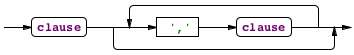
- clause:
- 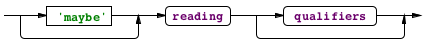
- qualifiers:
- 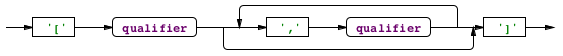
Each fact type reading may contain a quantifier expression before the last role player, which can assert mandatory, uniqueness or frequency constraints over the allowed population of instances of that fact. A qualifier that asserts a ring constraint (see below) may also follow a reading.
Note that a fact type does not have to be named; it can simply be a set of readings such as “Person was born at one birth-Place”. Naming makes the fact type a concept, and is necessary whenever no unique quantifier exists in the fact type, or where there are more than two roles. Where a fact type isn’t named, it cannot play roles in other fact types.
If a concept plays more than one role in a fact type, the separate roles must be distinguished by either adjectives or a defined role name, consistent with the binding rules defined below. In other cases, each reading of a fact type may use (or omit) different adjectives for the same roles.
The qualifiers are encased in square brackets, and are most commonly used for ring constraints. See the section on constraints for more details. The 'maybe' outer-join qualifier is only used in derivation clauses. Derivations are discussed below, under queries.
- derivation:

Readings
Fact type readings are a sequence of roles and linking words:
- reading:
- 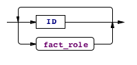
- fact_role:

- role_name_def:

The syntax here is ambiguous, because a fact_role consists of one or more IDs with optional hyphens to indicate adjectives, interspersed with arbitrary linking words (also IDs). So how is the ambiguity resolved?
First of all, CQL looks through all the fact roles of all readings in this definition, and finds the definitions of any role names are defined (using the last syntax shown). Role names apply to the preceeding concept, which must already be known. Elsewhere in this definition, the use of the new role name will be treated as a reference to the same occurrence of that concept (note that there may be more than one occurrence).
During the first scan, any adjectives that are marked with a hyphen (dash) are remembered with the associated role player. Adjectives may not be the same as the name of any defined concept, or of any local role name.
Now, all references to role players can be identified, because all will either be defined concepts or local role names. At this point, any unmarked adjetives can be matched up with their definitions, and the remaining words are the open vocabulary used as an identifier of this fact type.
When a fact type reading is re-iterated in order to invoke an existing fact type, for example in a constraint, in a derivation or to add a new reading to an existing fact type, there may be adjectives in the definition of the invoked fact type. These also must be matched in the reading.
Embedded Presence Constraints
The final role in a reading may be preceeded by a quantifier, which does not form a part of the reading. These are normally used to apply a uniqueness constraint (at most one), a mandatory constraint (at least one) or both (exactly one or just one). Other forms allow various other role frequency constraints. The quantity here may be a positive integer or the word one. Note that some quantifiers are only used in derivations or in constraints.
In this way, CQL absorbs many of the uniqueness, mandatory and frequency constraints of Object Role Modeling. The only ORM characteristic that cannot be expressed this way is a non-mandatory constraint having a minimum frequency above one; for example a constraint that allows zero, or more than two, occurrences. For example, in a footy tipping competition, it might be the case that if a participant submits no tips this week, they get the tips published by a known tipster, but if they do submit tips, they must submit at least eight. This kind of non-mandatory frequency constraint may be expressed in CQL using the maybe qualifier, which is also used in outer join derivations.
maybe Participant entered at least 8 Tips
Value Restrictions
A value restriction may follow a role reference where the role is played by a data type, and this constrains the allowed values of that data type in this role. In addition to fact type definitions, a value or a value restriction may be applied include fact instances and inn derivations, where it has the obvious effect.
In addition to the value restrictions that can apply to data types, a role played by a data type may be restricted to specified values or value ranges:
- restriction:
- 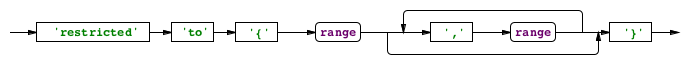
- range:
- 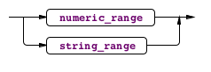
- numeric_range:

- string_range:
- 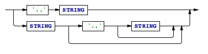
Note that the ranges in a value restriction may be open ended at one end.
Constraints
Quantifiers allow the definition of the most common kinds of constraints, the mandatory, uniqueness and frequency constraints (collectively, CQL calls these presence constraints). Often there are constraints that cannot be expressed in this form however, such as when a concept must play one of many unrelated roles. This is handled in CQL by the use of an external constraint definition, or with a ring constraint qualifier.
- constraint
- 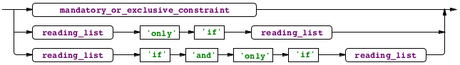
- mandatory_or_exclusive_constraint
- 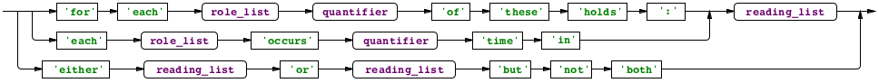
Mandatory (and either-or) constraints
When a single role player must play one and only one (or at least one) of a set of roles, we can say:
each Range occurs at least one time in Range has minimum-Bound, Range has maximum-Bound; for each ReceivedItem exactly one of these holds: ReceivedItem is for PurchaseOrderItem, ReceivedItem is for TransferRequest;
Where such constraints must be declared over fact types in which the same role player occurs in unrelated roles, the role players may be separated by the use of the keywords some and that. “That” means that this role player is the same one referred to earlier, and “some” means it’s not. If that’s still not enough, you can introduce adjectives and role names to separate the different instances of the same concept:
for each Unit exactly one of these holds: Unit is fundamental, that Unit is derived from some base-Unit;In the case where one of two fact types applies, you can use the more natural form:
either Unit is fundamental or Unit is derived from some base-Unit but not both;
External Uniqueness Constraints
For example, supposing that we were to identify Person instances by given name and family name (not a good idea in a real system!) we need to ensure that the combination given name, family name is unique. We can say:
each family Name, given Name occurs at most one time in Person is known by given-Name, Person has family-Name;
Subset Constraints
When one role may be played only if another is, you can use a subset constraint:
Address has third-StreetLine only if Address has second-StreetLine;
Note that this example didn’t use the first and second StreetLine, as we assume that the first StreetLine is a mandatory part of the address, so the subset constraint would be redundant.
Equality Constraints
Equality constraints declare that the populations of two roles (or role sequences) are the same. They are expressed using ‘if and only if’:
Competition is in Series if and only if Competition has series-Number;
Ring Constraints
When a fact type includes the same concept more than once, or includes a supertype and its subtype, there’s the possibility of the same instance playing both roles. This is often not desired, but further it introduces a whole class of further situations which can be restricted using ring constraints. The CQL keywords used in fact clause qualifiers for ring constraints are the following:
intransitive, transitive, acyclic and symmetric. Intransitive means that just because “A relates to B”, and “B relates to C”, that doesn’t mean that “A relates to C”. Transitive means the opposite. Acyclic means that no A may relate to itself, or to any B that has that relation to A, and so on. Symmetric means that if A relates to B, B also relates to A (so there is only one fact instance possible between A and B).
Join constraints
Most of the above constraint types may use joins, where more than one fact type is joined together with the and keyword. A full discussion is beyond the scope of this paper, but here’s a small example of a subset constraint using a join:
Diplomat speaks Language; Country uses Language; Diplomat serves in Country; Diplomat serves in Country only if Country uses Language and Diplomat speaks Language;
This constraint requires that in order to serve in a country, a diplomat must speak at least one language used in that country.
Fact Instances
When a fact reading is invoked with values, a fact instance is created. The simplest is where a declaration is just a concept name followed by a value:
Name ‘Fred’;
This form is allowed for any data type, or any entity type that’s identified by a single data type (or an entity identified by a single entity identified by a single data type, etc). In more complex cases, it might be necessary to invoke more than one fact type to define the instance:
Person is called given name ‘Fred’,
Person has family Name ‘Bloggs’;
The Person instance being defined is a reference to the same instance in each fact type reading; there is an implicit join over the two clauses.
A revision of the language will allow a contraction of such joins (which also occur in queries) to just
given Name ‘Fred’ is of Person who has family Name ‘Bloggs’;
Fact Derivation (Queries)
Fact derivation is a large subject by itself, so we’ll leave a detailed coverage for a future paper. Here’s a short introduction however.
When a fact type has the optional clauses that define its derivation, the population of that fact type is derived as a query over the fact types it invokes. Each condition clause is either a comparison, which compares a role value with a constant or another role value, or a fact type reading.
For a reading, at least one role must match an occurrence of that role in the new fact type or in another reading in the derivation. This match defines a logical join operation across the fact populations. Where the same concept occurs in different roles, and those roles are not to be joined, additional adjectives or defined role names may be used to separate the roles.
It’s possible to negate any invoked fact type by inserting the word no into it as a quantifier, or not as an additional linking word. Here are some examples of fact type derivations (the full fact type definition is elided):
Person has family Name,
family Name = ‘Bloggs’,
Person is not called given Name ‘Fred’,
Person is a kind of Employee,
Employee is managed by no Manager;
Result Constellations
A fact derivation may include a returning clause. Normally, when processing a query, only the concept instances that play the roles of the derived fact type (and satisfy the query) will be available in the results, and there is no defined ordering in the values. When the returning clause is used, additional concept and fact instances may be accessible within the result, which may also be sorted. This extension of the result set is transitive, so that if a derived fact type invokes another derived fact type, the returned instances from the invoked fact type’s returning clause will also be available.
The results now include more than just a simple table of the instances that play the roles of the derived fact type. Instead, each concept instance may be associated with additional facts for other roles it plays, and the roles of those facts will be populated by further concept instances, and so on. This data structure is hereby defined as a constellation, which is where CQL gets its name. The query has selected certain instances from the entire fact population, much as an astronomer might select stars from the night sky.
The use of returning doesn’t change the contents of
the defined fact type, it’s merely a pragmatic instruction to
the query engine about which additional instances will be useful to
the calling program, and in what order.